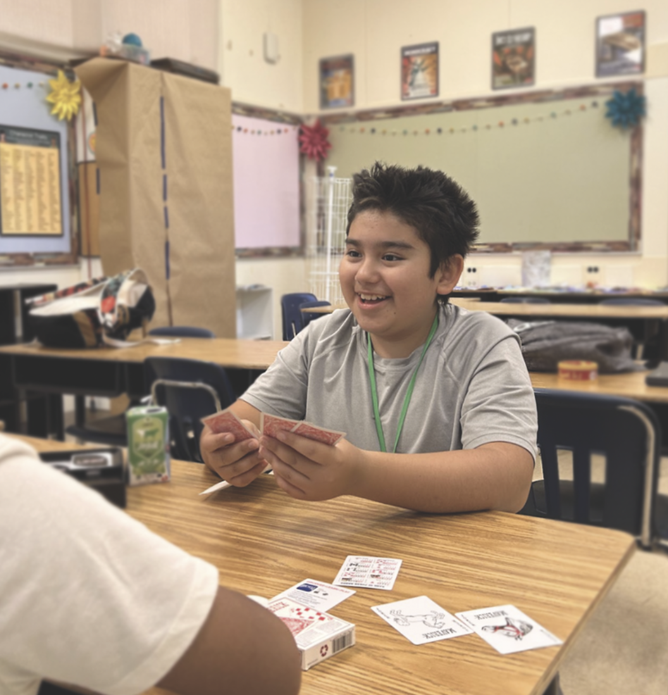
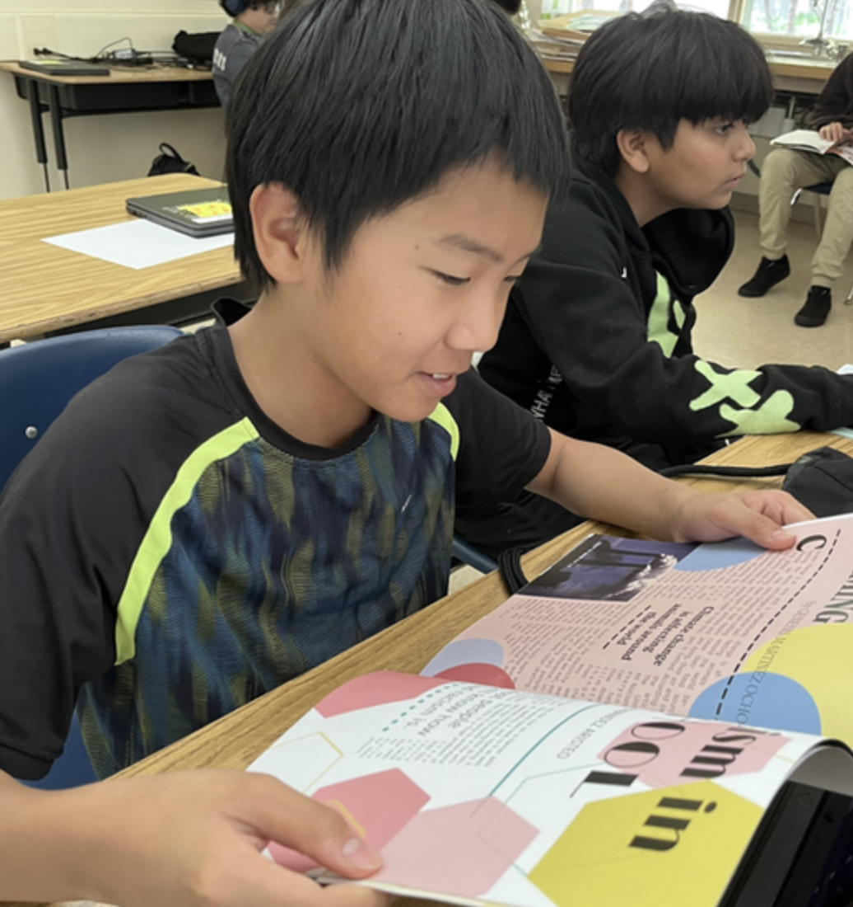

SUSO Camp
Stand Up, Speak Out: Journalism for Young Activists


Overview
Stand Up, Speak Out: Journalism for Young Activists is a project Grace undertook for her Girl Scout Gold Award. She wanted to address problems in journalism by combining her passions for teaching, public speaking, service, and journalism. The project took almost an entire year and more than 100 hours of work.
SUSO Camp was Grace's Girl Scout Gold Award project — the highest honor in Girl Scouting, awarded for sustainable community impact.
The Four Pillars
Writing
Over 70 students wrote articles with research and peer quotes about topics they care about, including teen homelessness and climate change.
Public Speaking
Students rehearsed and read their articles aloud to classrooms, building confidence in public speaking.
Results
Student stories were compiled into three printed magazines (one per grade). Nearly $1,000 was fundraised to print over 200 total magazines for students to take home.
Longevity
Grace created a website with all resources needed to replicate the camp. She worked with local organizations to ensure continuation and contacted dozens of journalism teachers to spread SUSO nationwide. The camp continued in 2024 with DreamCatchers without her direct involvement.
Impact
Across three grade levels, SUSO Camp reached approximately 70 students. Student articles were compiled into three printed magazines — over 200 copies total, funded by nearly $1,000 in fundraising. The camp's reach extended beyond Grace: in 2024, DreamCatchers continued SUSO Camp independently, demonstrating the program's lasting design.
Visit the SUSO Camp Resource SitePress Coverage
Verde Magazine
Feature about SUSO camp. Quote from Executive Director of DreamCatchers Nicole Chiu-Wang.
Paly Voice
High school student develops journalism summer camp
Feature about SUSO camp. Quote from DreamCatchers Program Manager Fatima Lopez-Sandoval praising Grace's sustainable curriculum.